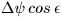

TDB (formerly ET) as Modified Julian Date (JD-2400000.5)
RETURNED:
sla_EQEQX
D
The equation of the equinoxes (radians)
NOTES:
1.
The equation of the equinoxes is defined here as GAST - GMST:
it is added to a mean sidereal time to give the
apparent sidereal time.
2.
The change from the classic ``textbook'' expression
 occurred with IAU Resolution C7,
Recommendation 3 (1994). The new formulation takes into
account cross-terms between the various precession and
nutation quantities, amounting to about 3 milliarcsec.
The transition from the old to the new model officially
takes place on 1997 February 27.
REFERENCE:
Capitaine, N. & Gontier, A.-M. (1993),
Astron. Astrophys.,
275, 645-650.